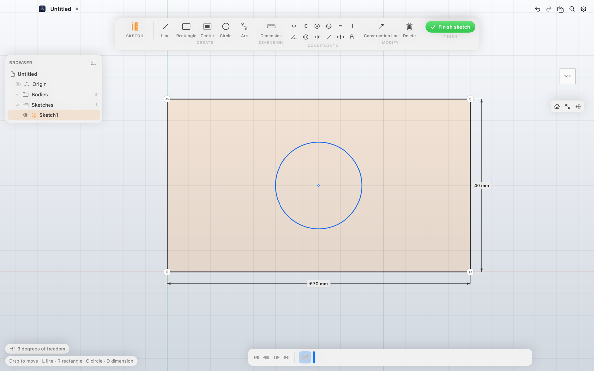
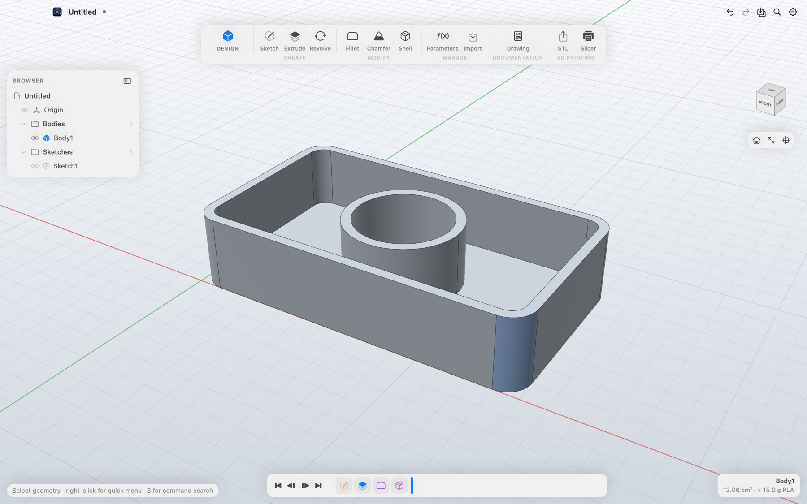
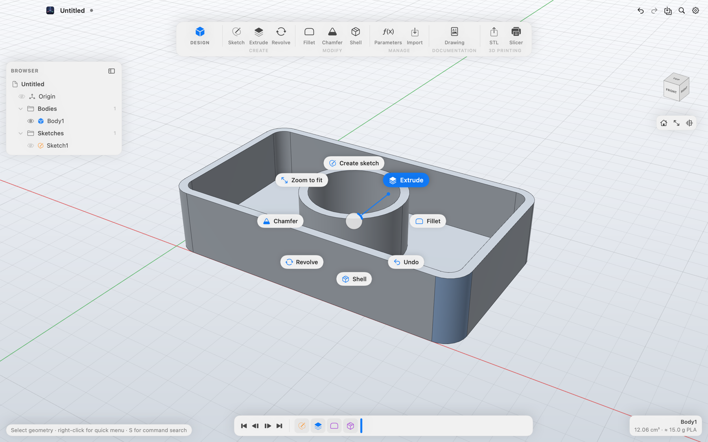
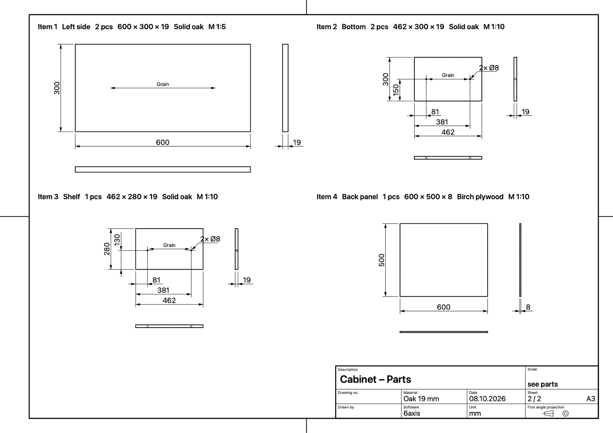

Design
Sketches with constraints and dimensions you type while drawing. Extrude, revolve, fillet, chamfer and shell. Every step stays editable in the timeline, and parameters like width / 2 drive the model.

6axis is a free CAD app for the Mac. You sketch, dimension and design parametrically – and get the dimensioned drawing, the parts list and the STL for your printer along with it. Offline, no account, open source.
Free for Macs with Apple silicon (M1 or later) on macOS 15 or later.


Sketches with constraints and dimensions you type while drawing. Extrude, revolve, fillet, chamfer and shell. Every step stays editable in the timeline, and parameters like width / 2 drive the model.

Export STL and STEP, or open the part in PrusaSlicer, Bambu Studio, OrcaSlicer or Cura with one click. Volume and weight are shown right away – for PLA, PETG, ABS and more.

The technical drawing comes for free: three standard views, baseline dimensions, holes, radii and chamfers, section and detail views. Plus a parts list with cutting sizes, part drawings and 1:1 DXF for CNC and laser.

6axis is built without a paid Apple developer account, so it isn’t notarized by Apple. macOS asks once on first launch.
In Terminal, the last step works like this too:xattr -dr com.apple.quarantine /Applications/6axis.app
6axis is released under the MIT licence: you may use, share and change it. The source code is on GitHub, and contributions are very welcome. Report bugs and ideas in the app under Help → Report a bug or directly as an issue.
Geometry is computed by Open CASCADE Technology and drawn with Metal – everything runs on your Mac, without internet and without an account.